Your Mac apps
and websites. One switch.
One click.
Switch your Mac and apps like Notes. Add Dusk for Chrome to darken websites like Google Docs.
Download for MacDirect download · Free
Add to ChromeChrome Web Store · Free
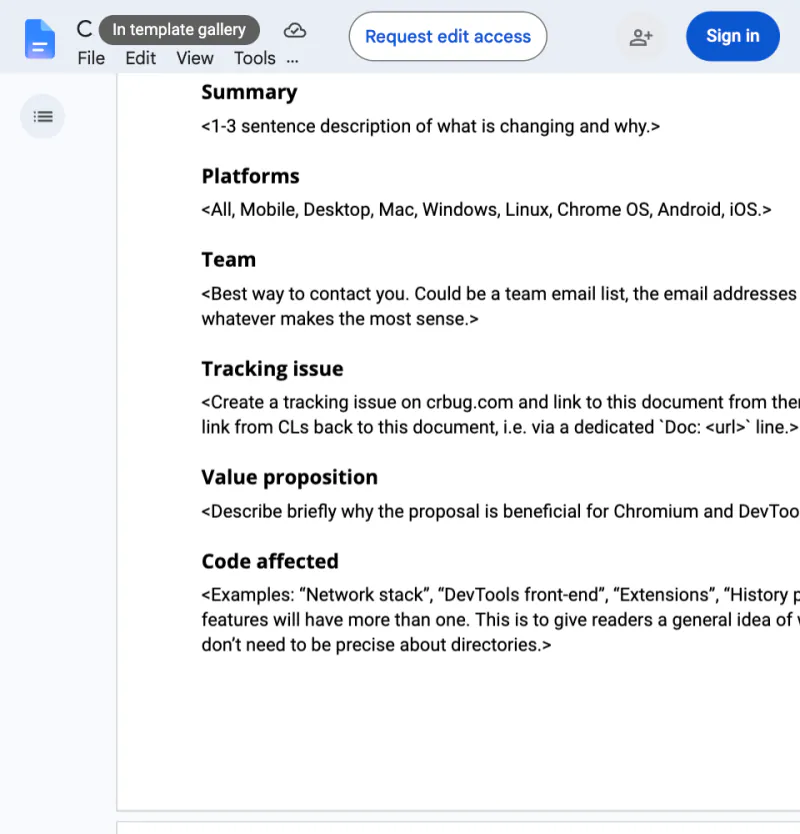
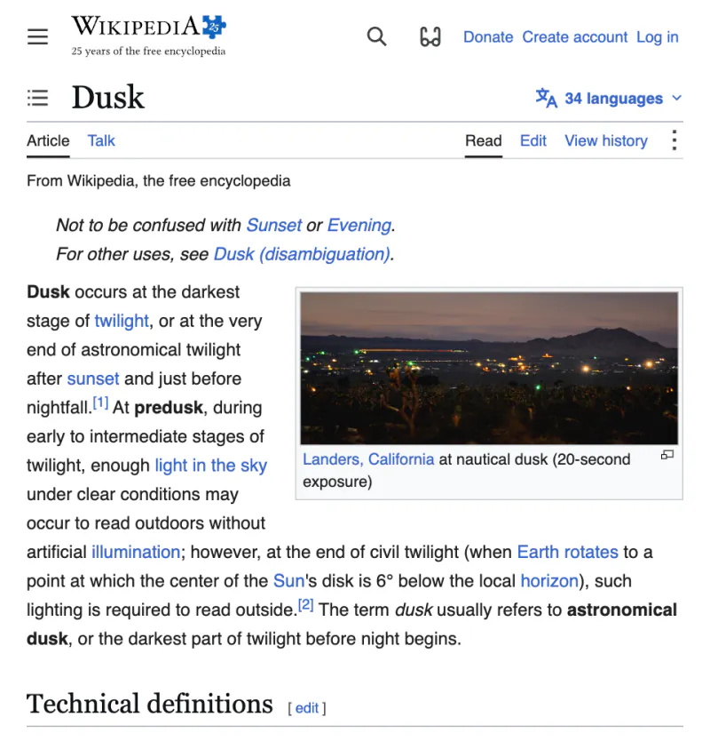
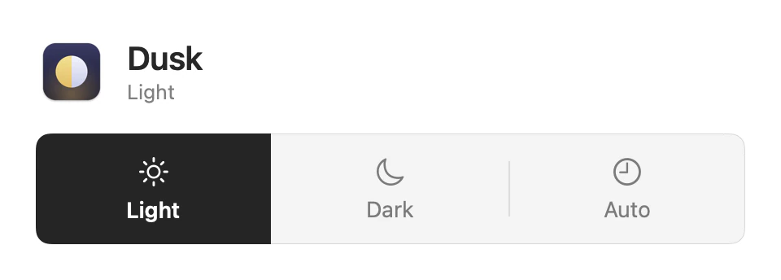
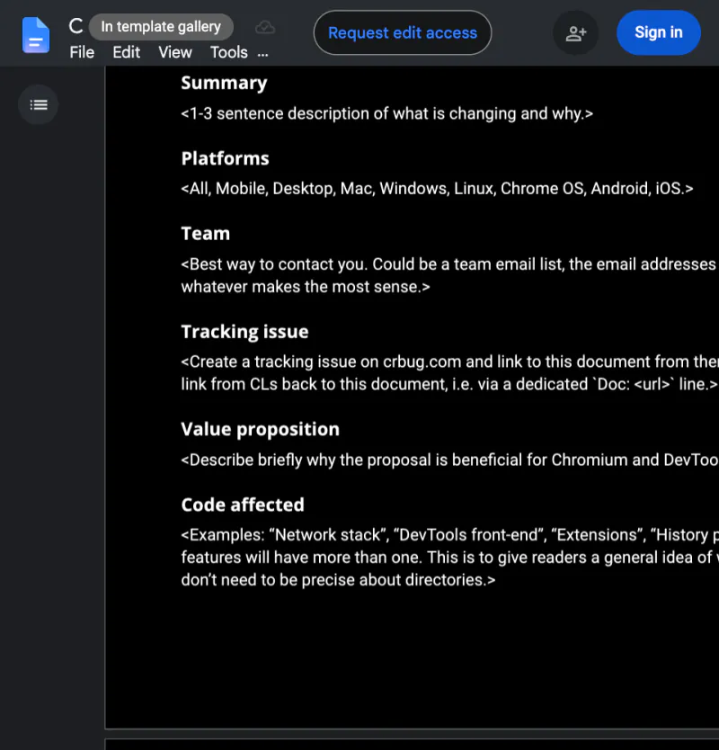
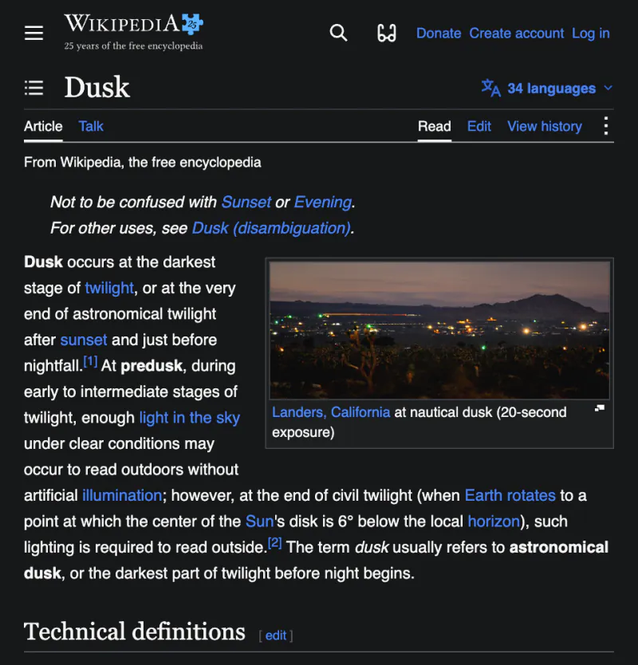
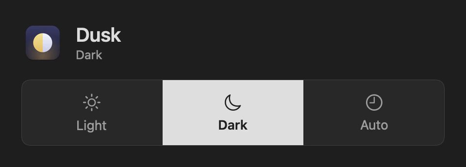
From Notes to Google Docs
Dusk for Mac changes your Mac and apps that follow its appearance. Add Dusk for Chrome for websites. To use them together, choose Device in Chrome and Follow system in Dusk for Chrome.
Dusk for Mac
changes your Mac’s appearance
Mac apps that follow your Mac
Notes, a Mac app
Websites in Chrome, with Dusk for Chrome
Google Docs, a website
Get Dusk
Dusk comes in two parts. Use either one, or both together.
Continue on your computer
Dusk installs on a computer, not on a phone. Send this page to yourself and open it there.
Dusk for Mac
Switch your Mac between Light and Dark from the menu bar, or let Auto follow sunset and sunrise or the hours you choose. Apps that follow your Mac change with it.
Free · 1.0.5 · 4.9 MB · macOS 14 or later
Direct download for Apple silicon and Intel Macs. Mac App Store edition: coming.
Dusk for Chrome
Darken websites that stay light, and choose a look for each site. The extension works on its own, in Chrome on a computer.
Free · Version 0.3.1
On the Chrome Web Store. More about Dusk for Chrome
How it works
Install Dusk for Mac
Download Dusk and open it. It lives in your menu bar, and a short checklist covers apps that need a one-time setting. The first switch may ask to control System Events.
The Mac App Store edition, coming later, is set up with two Apple Shortcuts instead. How that setup works
Add Dusk for Chrome
Pin Dusk in Chrome’s Extensions menu and choose Follow system or Always dark. To follow your Mac, keep Settings → Appearance → Mode on Device in Chrome.
Press Light or Dark
After setup, switch your Mac and the apps and websites that follow it. Or choose Auto and set the hours you want your Mac to go dark.
Only want websites? Dusk for Chrome works by itself, without the Mac app, and its popup can keep pages dark while your computer is light. Chrome help covers the rest.
What it does
Switch from the menu bar
The direct-download edition offers a checklist for apps that need a one-time setting. Keep an app dark or light where it allows it. Dusk reopens an app only with your permission.
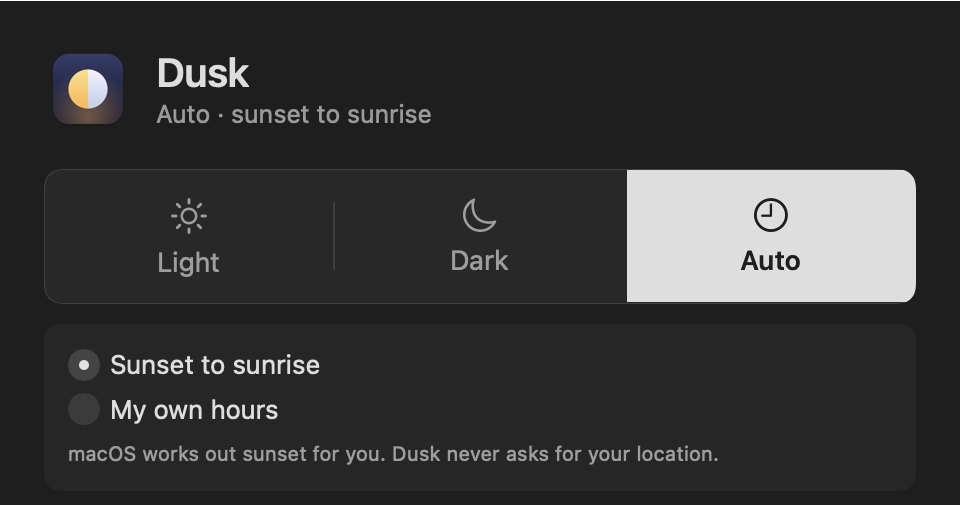
Websites that stay light
Google Docs and Sheets go dark with the page, and so do long articles, shopping pages and web apps. Menus, hover highlights and focused fields stay readable. A site that already shows the look you asked for keeps its own theme.
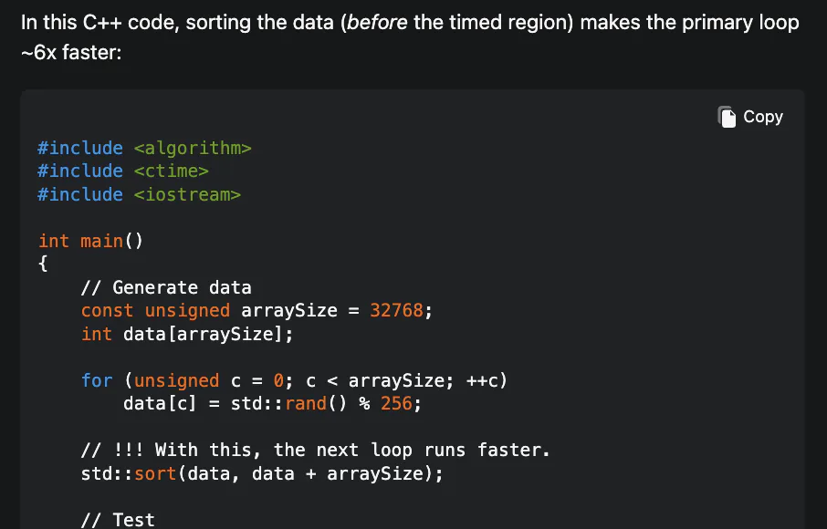
Photos keep their colors
Dusk changes a page's gray surfaces and its text, not your pictures. Photos and video keep their own colors, though some images or embeds may still look wrong. A picture placed inside a Google Doc changes with the paper.
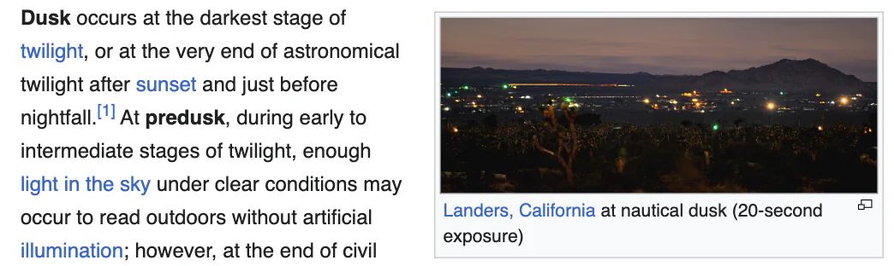
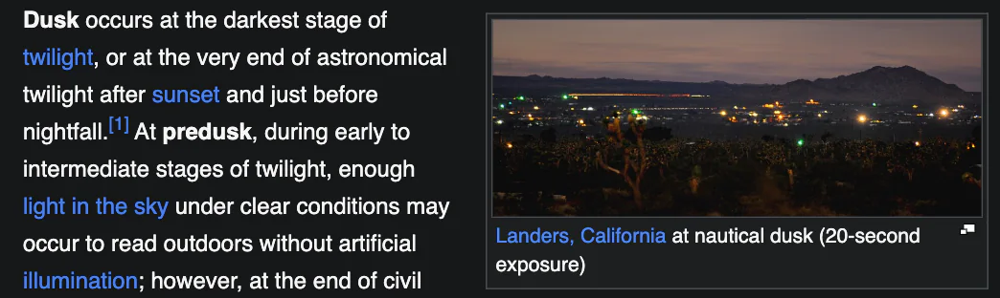
Your choice, site by site
In the popup, choose Follow, Dark, Light or Off for the site you are on. If a page looks wrong, Restore this website puts it back, with an Undo.
It works the other way too: when you switch to light, Dusk can lighten many dark-only sites.
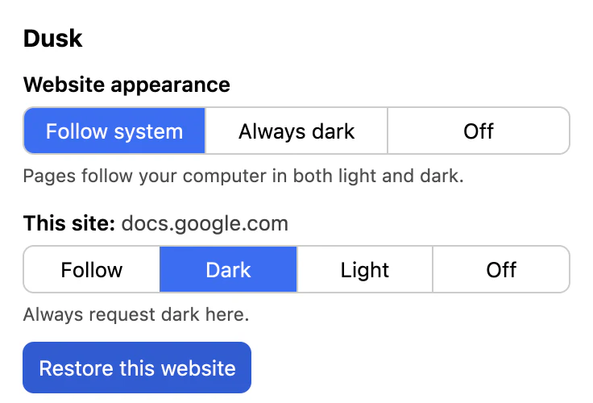
What Dusk cannot do
On a Mac
- Some apps, such as Calculator or Minecraft, have one fixed look. Nothing can change that, and Dusk says so.
- A few apps have their own theme setting fixed to Light or Dark. They need a one-time change to System inside the app, and Dusk's checklist shows where.
- A few apps only read their look when they open, so they must reopen to change. Dusk does that only with your permission, app by app.
- macOS does not let one standard Mac app stay dark while the rest is light. Dusk can keep such an app light, but not dark.
- When you choose to keep an app light, the direct-download edition adds or removes a standard macOS preference for that app. Separately, optional sync changes one documented theme value in supported apps' settings files and keeps a backup.
- The App Store edition is not released yet, so the download on this page is the direct-download edition.
In Chrome
- To follow your Mac, Chrome's Settings → Appearance → Mode must be Device. If it is Light or Dark, websites get that, whatever your computer shows.
- Colored areas, such as a brand's banner or a colored page background, keep their color, so some pages stay partly light in dark mode.
- In light mode, photo-heavy pages, such as streaming and game landing pages, may stay mostly dark, because Dusk keeps pictures as they are.
- Some chart lines drawn in SVG, and outlines drawn as shadows, are not recolored, so a dark line can stay dark on a darkened page.
- Chrome's own pages, such as settings and the Chrome Web Store, cannot be changed by any extension. PDFs and images opened in Chrome's own viewer are left as they are.
No account. No analytics.
- Dusk for Mac keeps your settings on your Mac. The direct-download edition can check its update feed; you can turn automatic checks off.
- The direct-download edition's first switch may ask to control System Events, which it uses for the system appearance switch.
- Dusk for Chrome processes appearance locally and may re-fetch a page's images to inspect their colors, without cookies or a referrer. The image's host sees a normal request, including your IP address and the page's site. If a picture inside an embedded element fails to load, Dusk may load it once more from the page, as the page itself would.
- Its settings and remembered sites stay in this Chrome profile on this computer. Nothing is sent to Dusk automatically; optional support reports reach us only if you send the email.
- Chrome's install prompt says Dusk can read and change your data on websites, because it recolors pages as they load. It does not collect or store page text, form data, cookies or credentials.
- Automatic detection does not remember visits in Incognito windows. Settings you explicitly save in the popup may remain in Chrome.
Read the direct-download and Chrome privacy policy, or the App Store edition's policy.